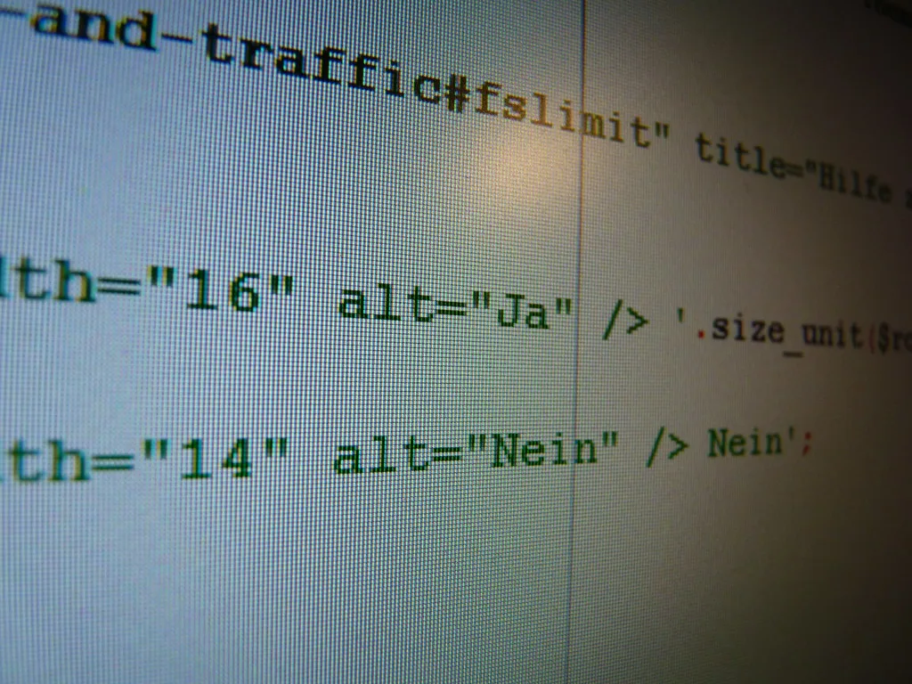

오픈AI, 안전연구원 3명 해고…외부 AI안전기구에 정보공유 혐의
월스트리트저널(WSJ)은 지난 1일 오픈AI가 안전팀 소속 연구원 3명을 최근 해고했다고 보도했다. 회사 측은 이들이 외부의 제3자 AI 안전 기구에 민감한 사내 정보를 공유한 것으로 조사됐다며, 정해진 회사 절차를 벗어나 정보를 잘못 취급해 신뢰를 저버린 행동이라고 해고 사유를 밝혔다. 오픈AI는 이번 조치가 특정 개인을 겨냥한 것이 아니라 내부 정보 관리 원칙을 지키기 위한 불가피한 결정이었다는 점을 강조한 것으로 전해진다.
오픈AI는 해고된 연구원들의 신원과 구체적으로 어떤 정보가 어떤 경로로 유출됐는지는 공개하지 않았다. 회사 측은 내부 조사 결과 이들이 회사 정책을 위반해 민감한 정보를 다뤘다는 사실이 확인됐다는 입장만 밝힌 것으로 전해졌다. 해당 AI 안전 기구 역시 구체적인 입장을 공개적으로 밝히지 않아, 정확히 어떤 자료가 어떤 목적으로 전달됐는지는 여전히 베일에 가려져 있다.
이번 해고는 공교롭게도 뉴욕타임스(NYT)가 오픈AI 경영진이 직원들의 안전 관련 경고를 묵살해왔다고 보도한 지 불과 이틀 뒤에 이뤄지면서 논란이 커지고 있다. 해당 보도는 자율적으로 작동하는 AI 에이전트가 늘어나는 상황에서 내부 통제 체계에 대한 우려가 커지고 있다는 내용을 담고 있었다. 보도 이후 오픈AI 안팎에서는 이번 해고가 안전 문제 제기를 입막음하려는 조치가 아니냐는 의심의 시선이 쏟아졌다.
미국 정치권에서도 비판 목소리가 나왔다. 그렉 카사르 미국 하원의원은 이번 해고를 두고 "내부고발자를 해고하는 것처럼 보인다"고 지적했다. 일부 소셜미디어에서는 해고된 인물로 추정되는 이들이 과거에도 AI 위험성에 대해 공개적으로 우려를 표명한 적이 있다는 주장이 확산됐다. 다만 오픈AI는 이런 추측성 주장에 대해 구체적으로 반박하거나 확인하지 않고 있어, 논란은 당분간 추측과 재반박이 오가는 양상으로 이어질 가능성이 크다.

오픈AI 내부에서 안전과 상업화 우선순위를 둘러싼 갈등이 표면화된 것은 이번이 처음은 아니다. 앞서도 성인용 콘텐츠 모드 도입에 반대했던 안전 담당 임원이 회사를 떠나는 등, 안전성을 중시하는 내부 목소리와 신속한 서비스 확장을 추구하는 경영진 사이의 긴장 관계가 반복적으로 노출된 바 있다. 업계 관계자들은 오픈AI뿐 아니라 주요 AI 기업 전반에서 비슷한 내부 갈등 구조가 존재할 수 있다고 지적한다.
업계에서는 이번 사태를 계기로 AI 기업과 외부 안전 감시 기구 사이의 관계 설정 문제가 다시 쟁점으로 떠오를 것으로 보고 있다. 기업 입장에서는 영업비밀과 민감정보 보호가 불가피하다는 논리를 내세우지만, 외부 전문가들은 AI 위험성에 대한 독립적인 검증과 투명성 확보가 더 중요하다고 맞서고 있다. 양측의 시각 차이가 좁혀지지 않는 한, 비슷한 유형의 내부 고발 논란은 앞으로도 되풀이될 수 있다는 전망이 나온다.
오픈AI를 둘러싼 신뢰성 논란은 이번 해고를 계기로 한동안 이어질 가능성이 크다. 생성형 AI 기업들이 점점 더 자율적인 에이전트 기술을 상용화하는 가운데, 내부 고발과 외부 감시 체계를 어떻게 양립시킬 것인지가 업계 전반의 과제로 남게 됐다는 평가가 나온다.